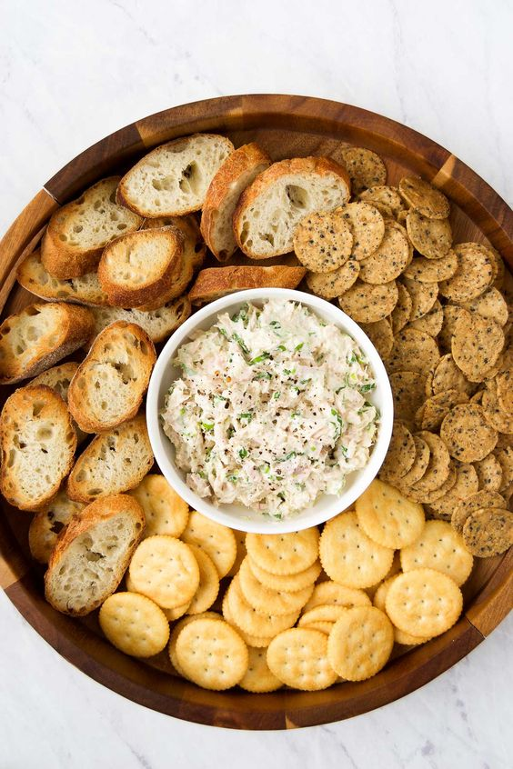

Tuna Miso Spread

Recipe
This tuna miso spread is a savory and umami-packed blend that's perfect for a quick and healthy snack or appetizer. Combining the rich flavors of canned tuna with the deep, salty notes of miso paste, this spread is elevated with a touch of sesame oil, soy sauce, and fresh herbs. It's incredibly versatile—use it as a dip for vegetables, a spread on crackers or toast, or even as a filling for sandwiches and wraps. Ready in minutes, this easy-to-make spread is both nutritious and satisfying, making it a go-to option for busy days or when you need a flavorful boost.
Ingredients
-
1 can (5-6 oz) of tuna, drained
-
1 tablespoon miso paste (white or yellow miso works well)
-
1 tablespoon mayonnaise
-
1 teaspoon sesame oil
-
1/2 tsp garlic powder
-
1 green onion, finely chopped
-
salt and pepper to taste
Steps
-
In a medium bowl, combine the miso paste, mayonnaise, sesame oil, and all other dry ingredients.
-
Add the drained tuna to the miso mixture. Use a fork to mash and mix the tuna into the paste until well combined.
-
Stir in the chopped green onion, and any fresh herbs of choice. Season with salt and pepper to taste.
-
If not serving immediately, cover and refrigerate. The spread can be stored in an airtight container in the fridge for up to 3 days.